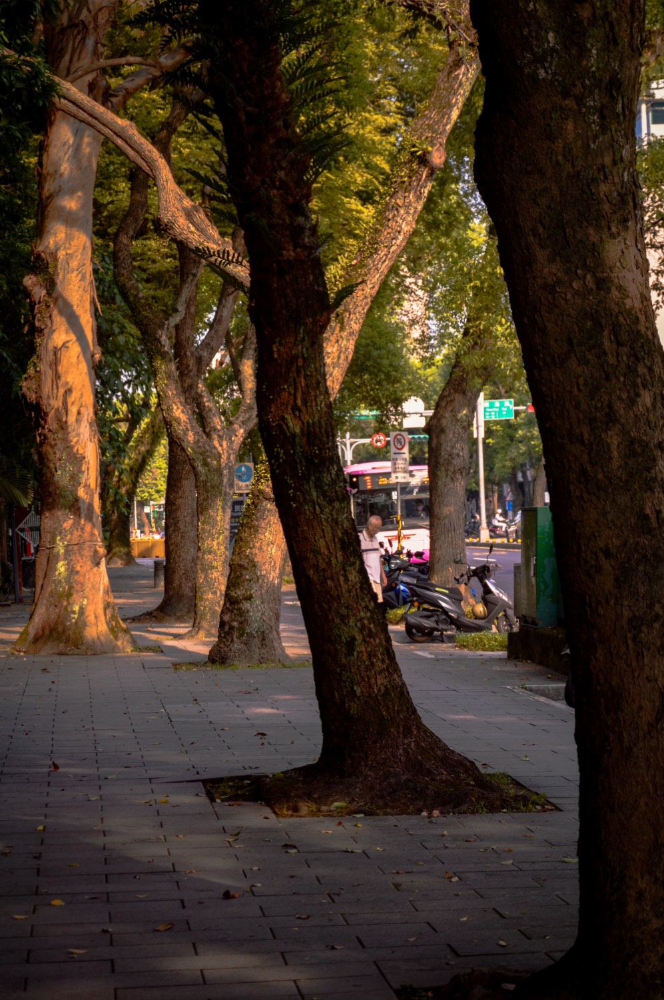

About me

- Camera
- Sony A7C
- Subjects
- Street and portraits
- Style
- Warm, film-like colour
Who I am
I'm Lucas Chen, a student at Kang Chiao International School. I picked up a camera in ninth grade, when I joined the school's photography club, and it's stayed with me since. Most of what I shoot is portraits — people are what I find most interesting to photograph — alongside event coverage for the club and photos of friends, family, and whatever else catches my eye day to day. I shoot on a Sony A7C and edit toward warm, film-like colour.
Why I love it
What keeps me coming back is how much of it I can control. Once I understand a setting — aperture, shutter, light — I can decide exactly how a scene ends up looking, in a way most of the world doesn't let you. It feels like taking something ordinary and choosing, on purpose, how beautiful it gets to be.
Why I chose photography for VLD
I already took photos, but mostly by habit, without thinking much about why a shot worked or didn't. VLD gives me one period a week to slow that down: learn one technique on purpose, test it with a real photo, and write honestly about whether it worked. It's less about taking a better photo every week and more about learning to notice what I'm actually doing when I take one.